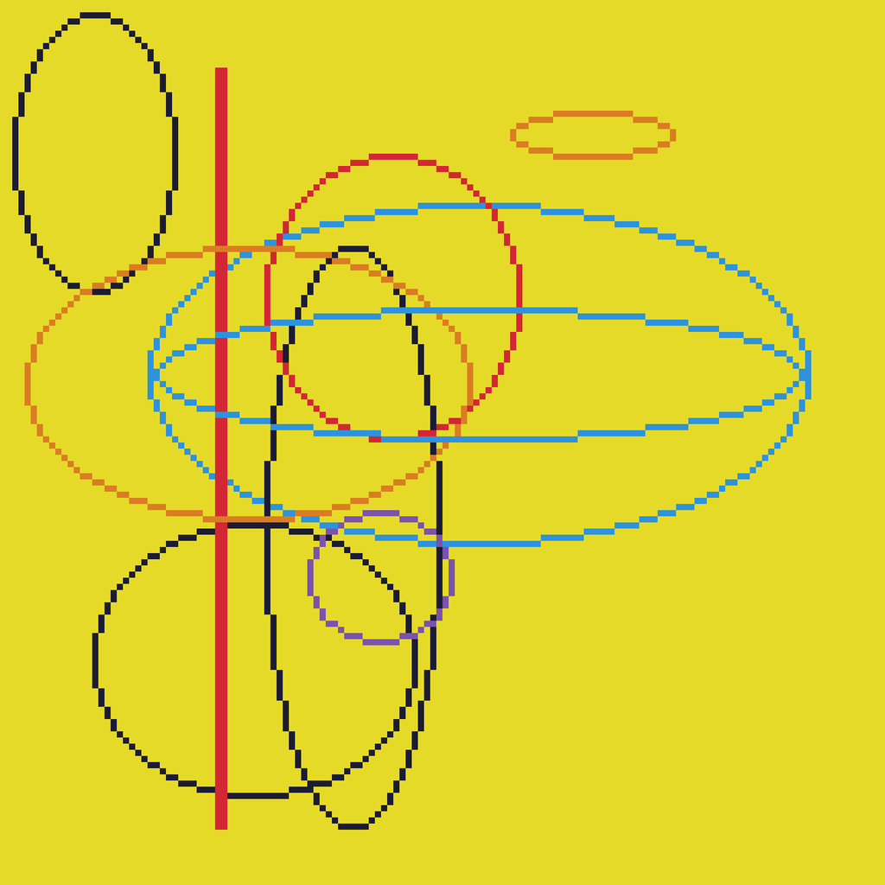
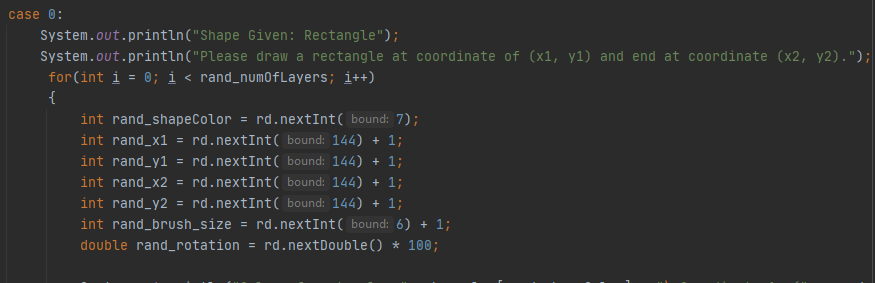
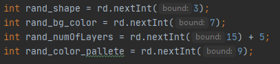
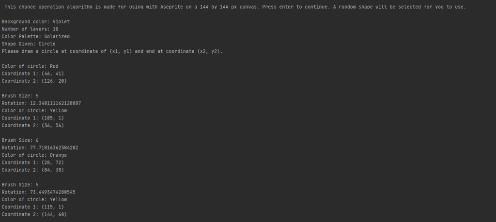
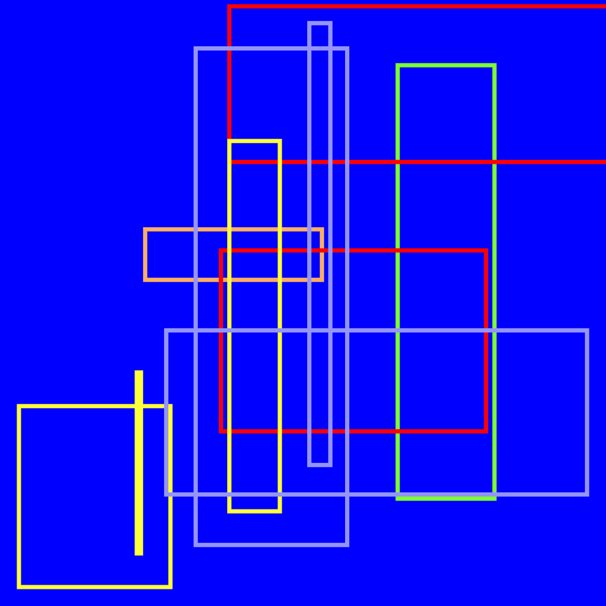
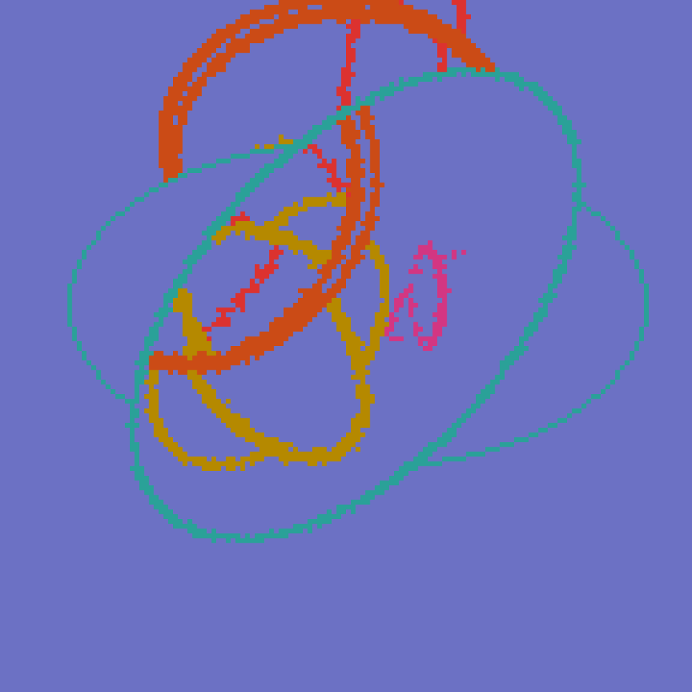
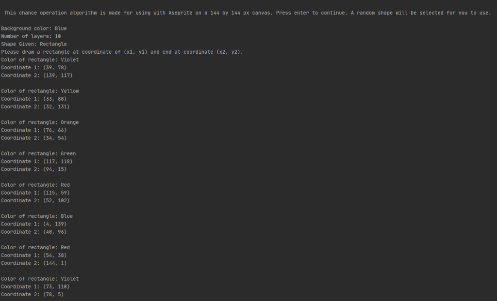
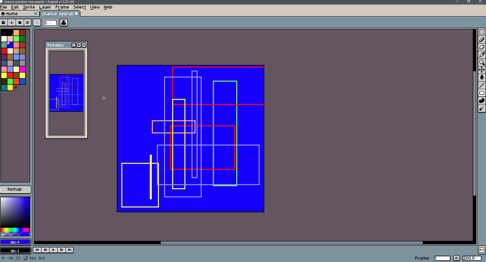

By Patrick Celedio
In my art class, we learned about chance operations: the use of randomness to determine steps to produce art. This gave me an idea to write a program that uses a random number generator/write some crazy haphazard algorithm that chooses a non-filled 2-d shape to use as our shape to work with, and then also use a RNG/algorithm to produce random values which determine color of shape, color of background, size of shape, coordinate location on the canvas, and number of layers. This program is to be used with a 144×144 pixel canvas on Aseprite, to be my medium.
      I have a dedicated blog post on this on my art blog.
Afterthoughts: There are definitely more variables that could be manipulated by chance. Instead of using the rand() function in Java, I could instead implement an intricate math functions such as sin() or cosin() to affect the outcome of the x and y coordinates. I can also add a step where at the end of creating the shapes, we can have the canvas scaled and skewed by a certain chance-given value.